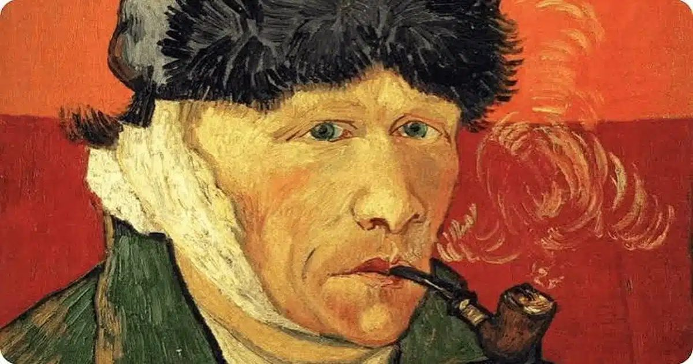

Связь творчества с психическими проблемами обнаружили у художников
Творческие профессии часто объединяют в одну группу, когда изучают их связь с психическим здоровьем.
Однако исследование почти 15 тысяч шведских близнецов показало, что художественные достижения чаще сочетались с психическими проблемами, а научные —нет.